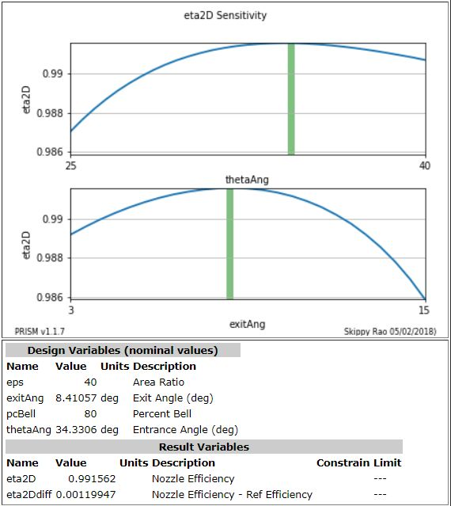
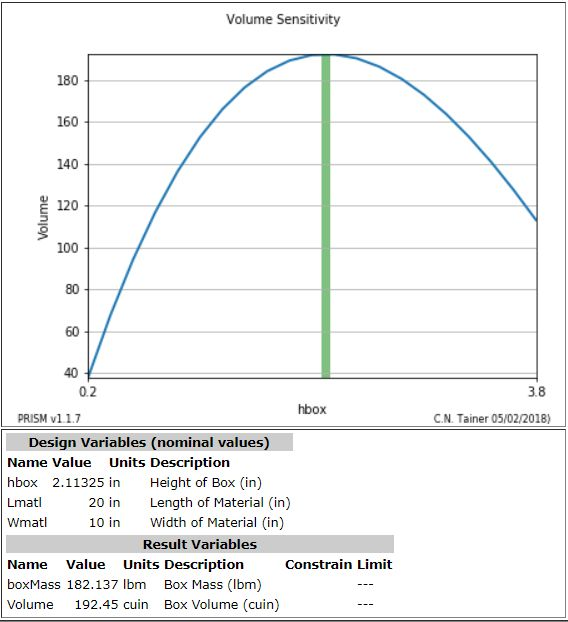
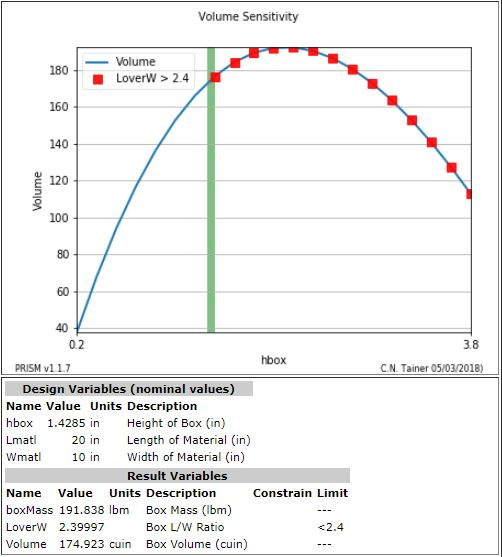

Optimization¶
PRISM has two built-in multivariate optimizers with constraints, fmin_cobyla and MDOT.
- fmin_cobyla is part of the scipy optimizer suite and will minimize a function using the Constrained Optimization BY Linear Approximation (COBYLA) method. This method wraps a FORTRAN implementation of the algorithm. (see: https://docs.scipy.org/doc/scipy/reference/generated/scipy.optimize.fmin_cobyla.html)
- MDOT (MicroDOT Optimization Tool Version 1.00) is built from FORTRAN source code. (FORTRAN source code and executable are included in prism/fortran subdirectory)
fmin_cobyla is the default optimizer, however MDOT can be selected when optimization is invoked.
In a PRISM model, the optimizer is called with the following:
optimize(S, figureOfMerit="eta2Ddiff", desVars=["thetaAng","exitAng"],
findmin=0, useCOBYLA=0)
This statement tells the optimizer to find a maximum, findmin=0 and to use the MDOT optimizer, useCOBYLA=0.
The objective function is called "eta2Ddiff" and the design variables that can be varied are ["thetaAng","exitAng"].
Recall that the range of the design parameters are predefined in statements such as:
# design vars have:
# name, value, minVal, maxVal, step, units, description
S.addDesVars(
["thetaAng", 35, 25.0, 40.0, 0.5, 'deg', 'Entrance Angle'],
["exitAng", 9, 3.0, 15.0, 0.5, 'deg', 'Exit Angle'] )
Starting Condition¶
When the optimizer is called, it outputs the initial state of the math model in a table such as that shown below.
| PRIOR TO OPTIMIZATION |
|---|
PRISM System: Parabolic Nozzle
type = analysis
======================================
name value minimum maximum
thetaAng 35 25 40 Entrance Angle (deg)
exitAng 9 3 15 Exit Angle (deg)
Figure of Merit = 0.001 = Nozzle Efficiency - Ref Efficiency (eta2Ddiff)
======================================
======================================
|
Optimized Condition¶
When the optimization is complete, another similar table is output.
| AFTER OPTIMIZATION |
|---|
PRISM System: Parabolic Nozzle
type = analysis
======================================
name value minimum maximum
thetaAng 34.3306 25 40 Entrance Angle (deg)
exitAng 8.41057 3 15 Exit Angle (deg)
Figure of Merit = 0.00119947 = Nozzle Efficiency - Ref Efficiency (eta2Ddiff)
======================================
======================================
|
Sensitivity Plot¶
It is always a good idea to output a sensitivity plot after optimization, in order to help confirm that an optimum has been found. The plot can be created with the statement below:
makeSensitivityPlot(S,figureOfMerit="eta2D", desVars=["thetaAng","exitAng"])
Note that the design points, as indicated by the green bars, align with the peaks of both curves. Because these plots are "slices" through the true response surface, they are not, by themselves, an indication of the true optimum. However, when coupled with the optimizer, they provide a good confirmation of the optimizer's work.
{kind=link}
Constraints¶
Constraints can be placed on result variables when they are defined in order to place boundaries on the solution of an optimization.
In the previous box problem, a W x L rectangular sheet of material is made into a box by cutting off an h x h square from all four corners and then folding the sides up to make an open box.

For the above box, two different optimizations problem statements are made.
- Find the value of h that maximizes the box volume.
- Find the value of h that maximizes the box volume where the Length / Width of the resulting box is < 2.4
The only difference in the two problems is setting the constraint on the LoverW variable defined in the PRISM file:
# Unconstrained result variable
S.addResultVariable( name="LoverW", units='', desc='Box L/W Ratio')
# Constrained result variable
S.addResultVariable( name="LoverW", units='', desc='Box L/W Ratio', constrCond='<', constrVal=2.4)
Notice how the optimizer does not increase the value of hbox, beyond the constraint value on L/W.
Since the constraint is for LoverW < 2.4, the violating points are labeled "LoverW > 2.4".
 {kind=link}
{kind=link}